| |
HOME | RESUME | TECHNICAL SERVICES | DRAGON'S FURY SERIES | ABOUT JEFF HEAD | PATRIOTISM | CONTACT |
September 2005 Note: Click on any of the pictures in this report for a larger image. Over the 2005 Labor Day weekend we drove from Idaho to Bremerton, WA to visit my daughter and son-in-law and our two grandsons. A secondary reason was to take a look at the US Navy reserve fleet there in Bremerton and to see any current US Navy vessels in the yards. The trip over was very beautiful and pleasant. There is a lot of very beautiful scenary between Idaho and Washington. Here are some pictures of some of that scenary. 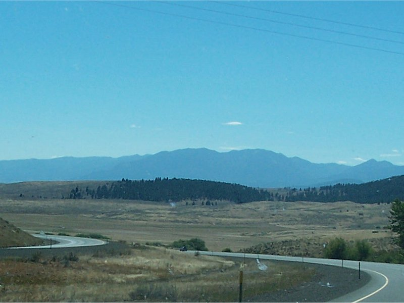 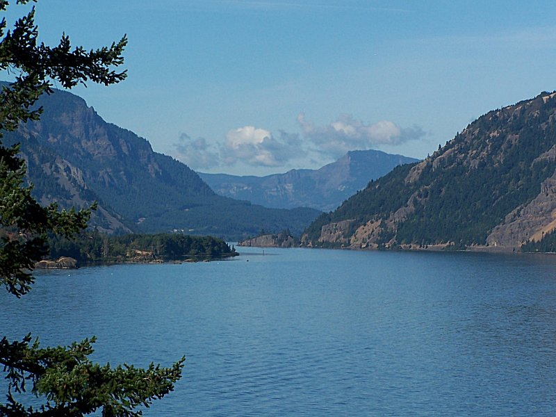 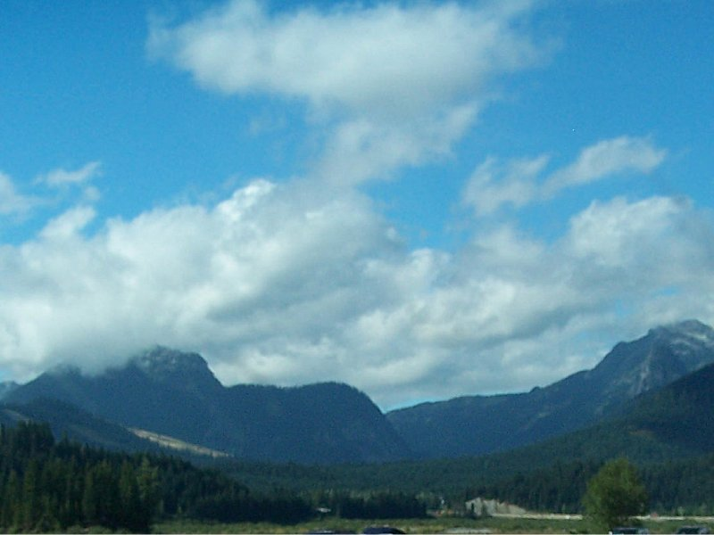 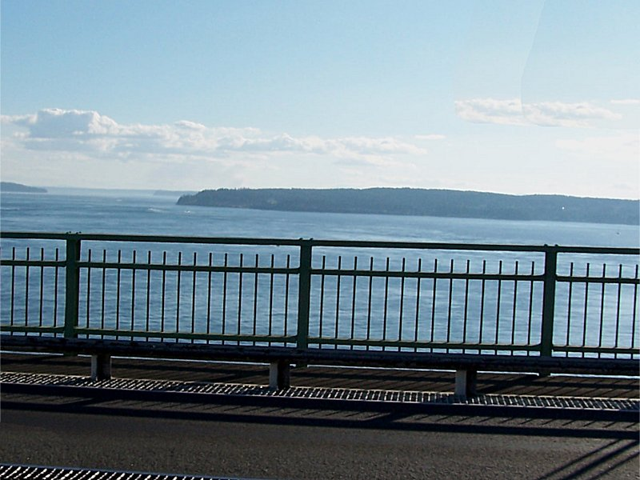 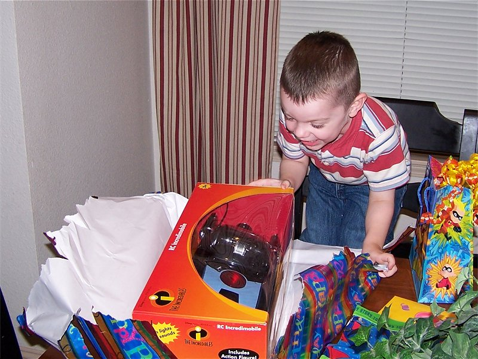 
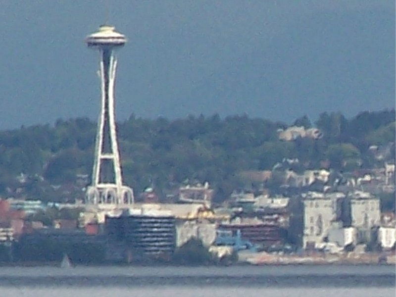 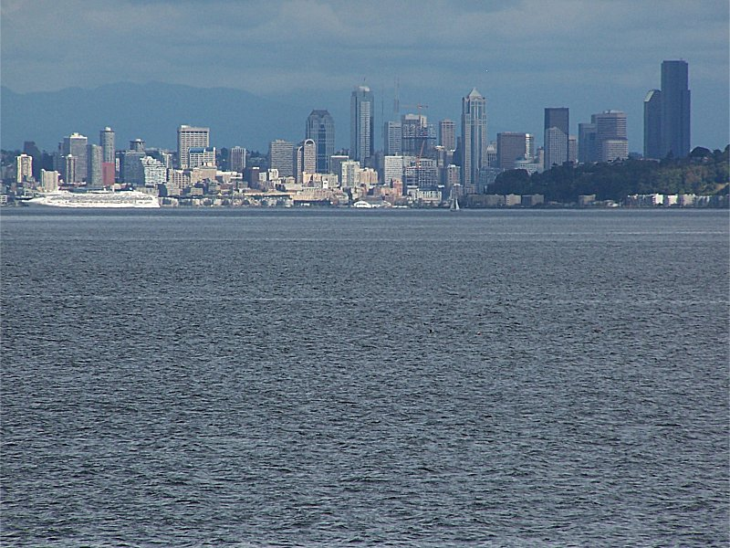 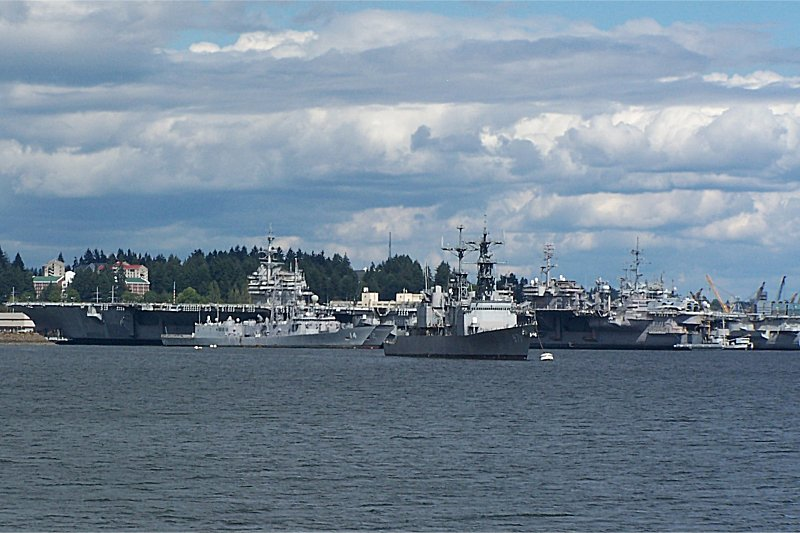 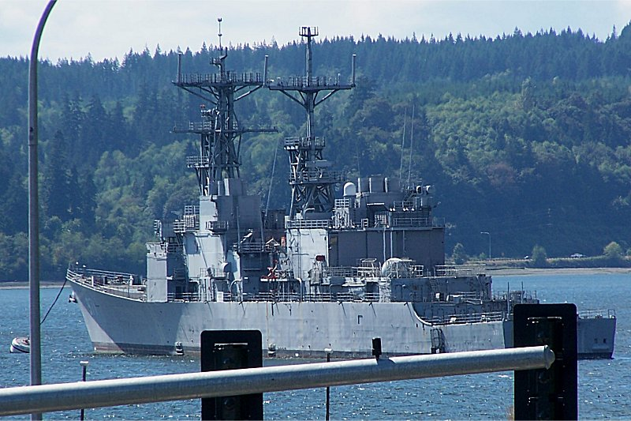 A picture of the entire reserve fleet, and a close-up of the USS David R. Ray, DD-971
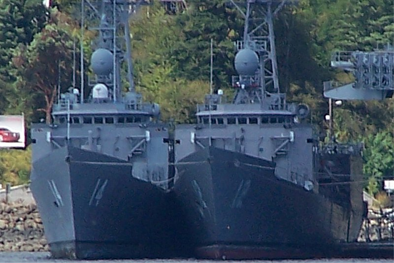 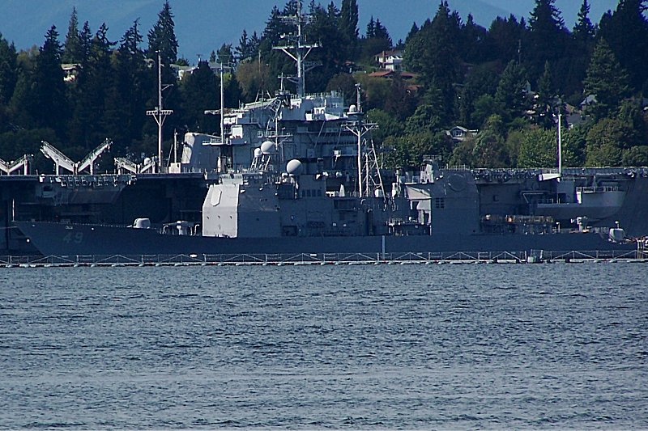
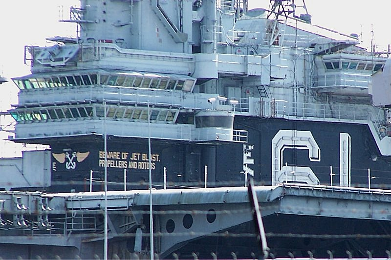 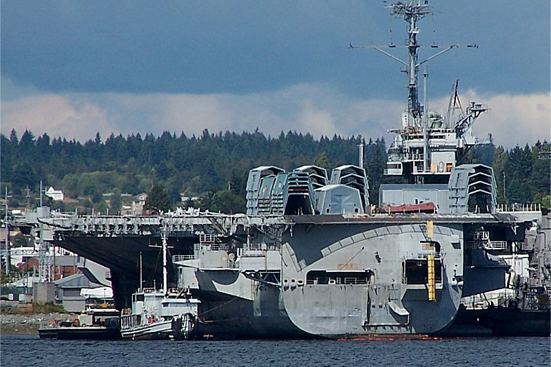
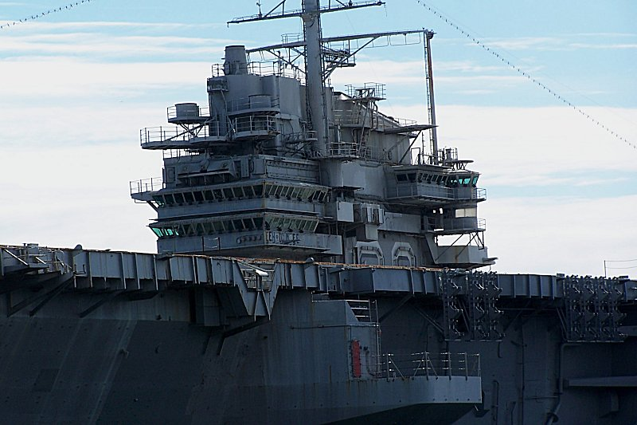 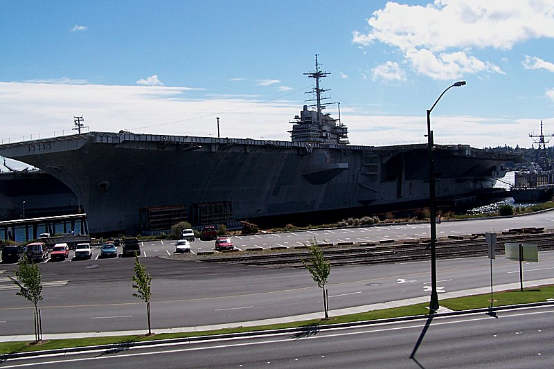
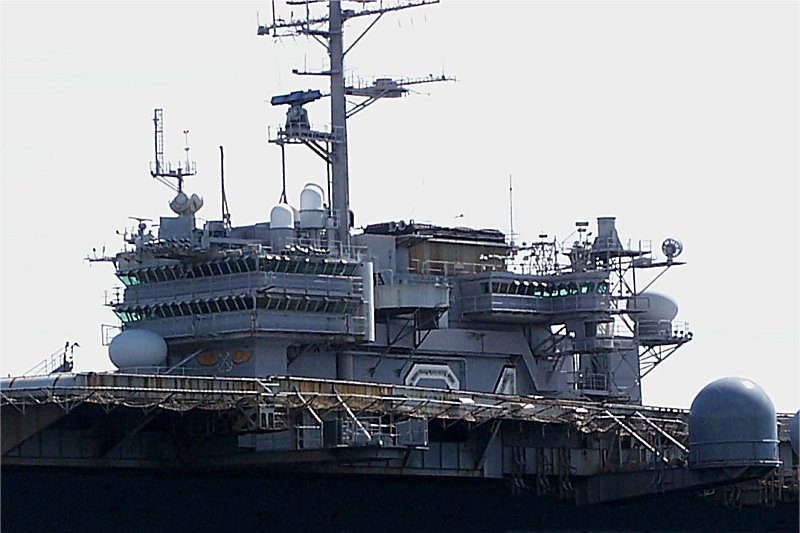 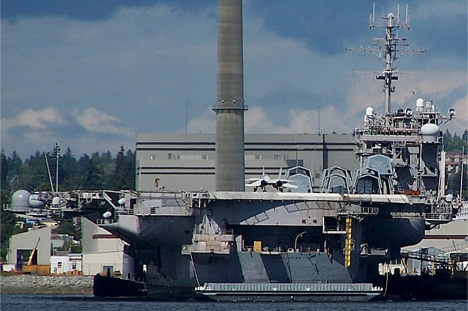 On this trip, as an added bonus, we were able to observe two US Navy front line vessels, the USS John Stennis and USS Ohio, in port undergoing maintenance and significant upgrades and refit at the Bremerton Naval shiptards. I got several pictures of them and here are a couple. 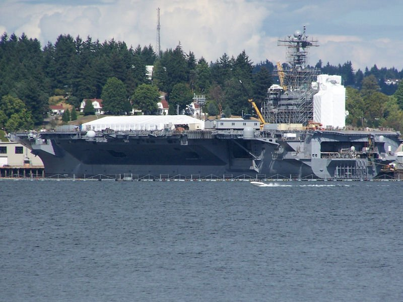 The nuclear powered aircraft carrier USS John Stennis, CVN 74.
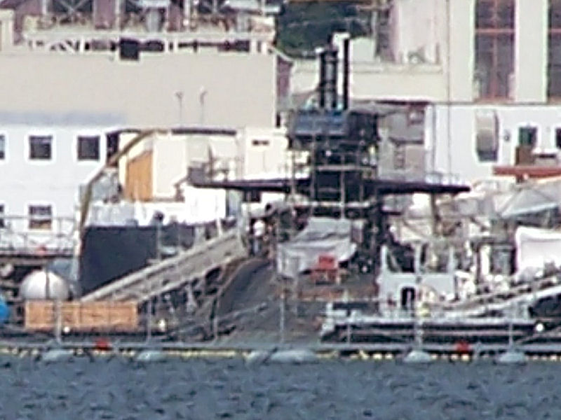 Thanks for taking the time to share this family trip with us, and the pride we have in the United States military and the loyal men and woman who works so hard to defend our liberty and the fundamental moral values that define our way of life, and all of those who give so much of themselves to maintain and serve that cause.
Jeff Head |


Copyright © 2001-2009, by Jeff Head, All Rights Reserved
Web Site by Just-Fix-It Web Services

free hit counter